Using Amazon Rekognition Custom Labels from R to train a Swoosh detector
You can use Rekognition Custom Labels to train your own machine learning models that perform image classification (image level predictions) or object detection (object/bounding box level predictions).
Amazon Rekognition Custom Labels automatically selects the right machine learning algorithm to train your custom machine learning model based on the labeled data you provide without requiring deep learning expertise.
R users can access and use Amazon Rekognition Custom Labels using the fabulous paws package, an AWS SDK for R, created by David Kretch and Adam Banker.
In this article, we will use Rekognition Custom Labels to train an object detection model to detect the Swoosh, Nike’s famous logo that Carolyn Davidson designed in 1971:
The process of using Rekognition Custom Labels to train, evaluate, deploy and use image classification or object detection models is the same and consists of the following steps:
- Step 0: Collect and preprocess your image data
- Step 1: Create an S3 Rekognition Custom Labels default bucket in your region
- Step 2: Upload your dataset to S3
- Step 3: Create a Rekognition Custom Labels dataset
- Step 4: Create your project
- Step 5: Train your model
- Step 6: Evaluate the training results
- Step 7: Deploy your model
- Step 8: Make real-time predictions for new data
- Step 9: Stop your model
We will follow the steps described above to build our Swoosh detection model. Not all of the steps are supported by the Rekognition API. If necessary, we will switch over to the Amazon Rekognition Custom Labels console.
The entire code of this article is also part of a self-paced and fully reproducible workshop based on Rmarkdown that you can download from GitHub here.
Prerequisites
In short, you need to have an IAM admin user with programmatic access to the AWS API and you need to save the user’s access key ID and secret access key as R environment variables:
-
You need to have access to an AWS account using an IAM user.
-
The IAM user needs to come with security credentials that allows him to access AWS (1) programmatically via the API using an access key ID and a secret access key and (2) via the AWS Management Console.
-
For simplicity, you can use an IAM admin user to follow along: Attach the
AdministratorAccesspermissions either directly to your IAM user or to a group your user is a member of. See the official documentation for creating your first IAM admin user and group.
Local installations & configuration
- Install
pawsfrom CRAN usinginstall.packages("paws")and set the following environment variables in your.Renvironfile which is easiest to do usingusethis::edit_r_environ():
AWS_ACCESS_KEY_ID = [YOUR_ACCESS_KEY_ID]
AWS_SECRET_ACCESS_KEY = [YOUR_SECRET_ACCESS_KEY]
AWS_REGION = [CHOOSE_A_REGION_ID_LIKE_us-east-1]
- Make to sure to install the remaining 8 R packages referenced in the next section on your machine.
Info
At the time of writing this article in December 2020, Amazon Rekognition Custom Labels is available in 4 regions: us-east-1 (N. Virginia), us-east-2 (Ohio), us-west-2 (Oregon), and eu-west-1 (Ireland). Please make sure to update the
AWS_REGIONentry in your.Renvironfile in case you configured another AWS region.Amazon Rekognition Custom Labels is currently also part of the AWS Free Tier which means you can get started for free: The service-specific Free Tier lasts 3 months and includes 10 free training hours per month and 4 free inference hours per month.
Load the necessary libraries
library(paws)
library(purrr)
library(readr)
library(tibble)
library(jsonlite)
library(stringi)
library(tidyr)
library(dplyr)
library(magick)
Step 0: Collect and preprocess your image data
We collected 75 free and publicly available images containing the Nike Swoosh logo from pexels.com, preprocessed/scaled the images, and uploaded 70 of the preprocessed images as a dataset to Kaggle that we will use to train the Swoosh detector model. The remaining 5 of the pre-processed images come with this repository as a hold-out test set for making real-time predictions.
Please navigate to the Nike Swoosh Compilation dataset on Kaggle, click on the page’s Download button, and unzip archive.zip once the download is complete.
The compilation below shows some of the images we collected:
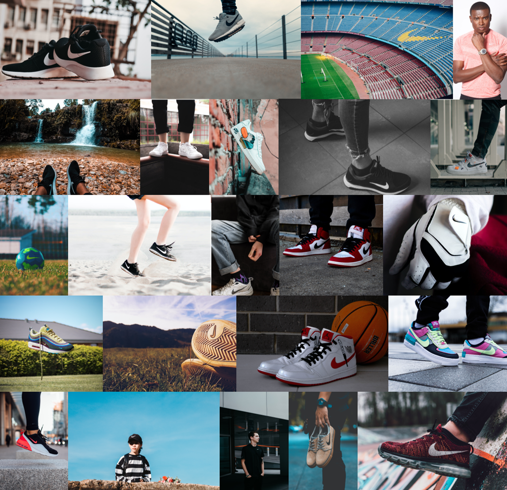
Info
The minimum and the maximum image dimension of images used for training jobs and for inference with Rekognition Custom Labels is 64 pixels x 64 pixels and 4096 pixels x 4096 pixels respectively. Always scale your images accordingly before you use Amazon Rekognition Custom Labels.
Additional requirements like supported image file formats, maximum image size, maximum number of labels per image are described in the official documentation here.
We used the purrr-EBImage-recipe below to scale the images from Pexels below the 4096 pixels threshold before we uploaded them to Kaggle. You can use the recipe in your future Rekognition Custom Labels projects but we don’t need to use it here:
library(EBImage)
library(purrr)
source_folder <- "./[folder_of_images_to_be_scaled]"
target_folder <- "./[folder_to_save_scaled_images/]"
walk(file_names, function(x) {
img <- readImage(paste0(source_folder, "/", x))
img_dim <- dim(img)
index <- which.max(img_dim)
if(img_dim[index] > 4096) {
scale_fct <- 4096 / img_dim[index]
img <- resize(img, w = img_dim[1] * scale_fct, h = img_dim[2] * scale_fct)
}
writeImage(img, paste0(target_folder, "/", x), quality = 95)
})
Step 1: Create S3 Rekognition Custom Labels default bucket
Creating the default S3 Rekognition Custom Labels bucket is an one-time step per region in which you like to use Amazon Rekognition Custom Labels. You don’t need to repeat this step afterwards.
In the AWS console select Amazon Rekognition underneath services and then select Use Custom Labels in the left sidebar. Click on Get started in the middle of the Amazon Rekognition Custom Labels console and then on Create S3 bucket to create your Rekognition Custom Labels default bucket in your region:
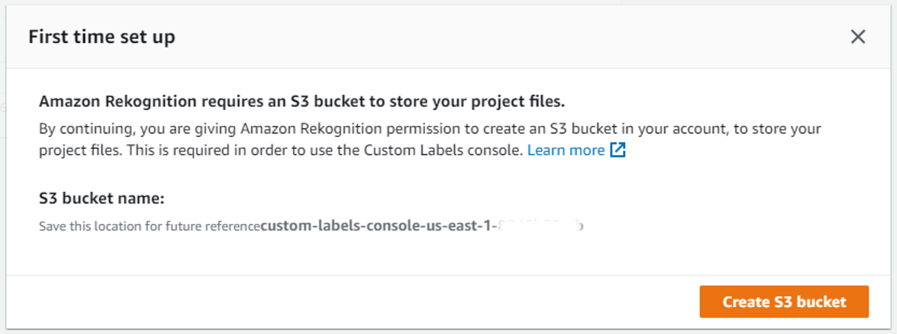
You can safely ignore the prompt in the console to create your first Custom Labels project. We will do this later via the API.
Next, we create an S3 client to retrieve the name of our S3 Rekognition Custom Labels default bucket you just created. We will need the S3 bucket name later.
s3 <- s3()
region <- Sys.getenv("AWS_REGION")
custom_labels_bucket <- s3$list_buckets() %>%
.[["Buckets"]] %>%
map_chr("Name") %>%
keep(function(x) startsWith(x, paste0("custom-labels-console-", region)))
Step 2: Upload your dataset
We will create a new folder /assets in our S3 Custom Labels default bucket to which we will upload the Swoosh dataset.
s3$put_object(Bucket = custom_labels_bucket, Key = "/assets/", Body = "")
Next, we will switch over to the S3 console and upload the unzipped folder swoosh_data of Swoosh images we downloaded from Kaggle.
Navigate to the /assets folder we just created and click on Upload:
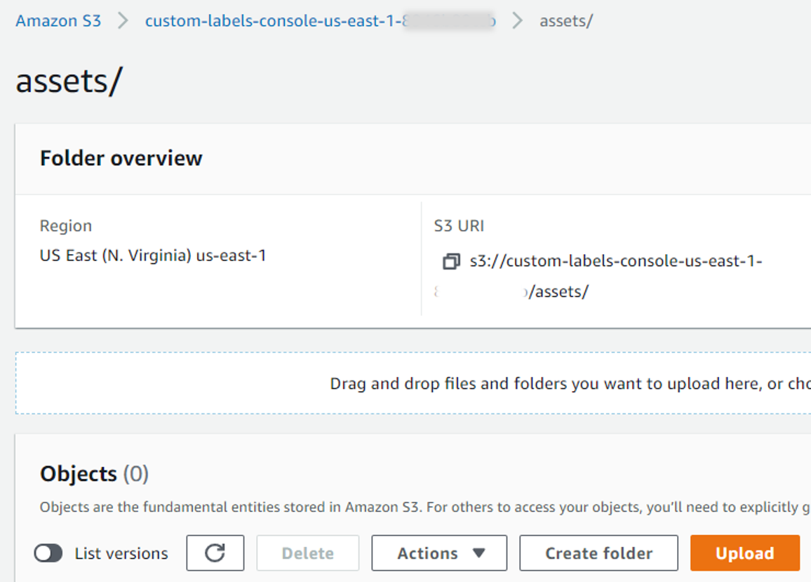
Click on Add folder and select the /swoosh_data folder on your file system:
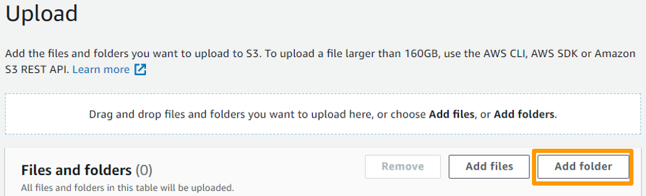
Important: Back on the Upload page, make sure to scroll down and click on Upload:
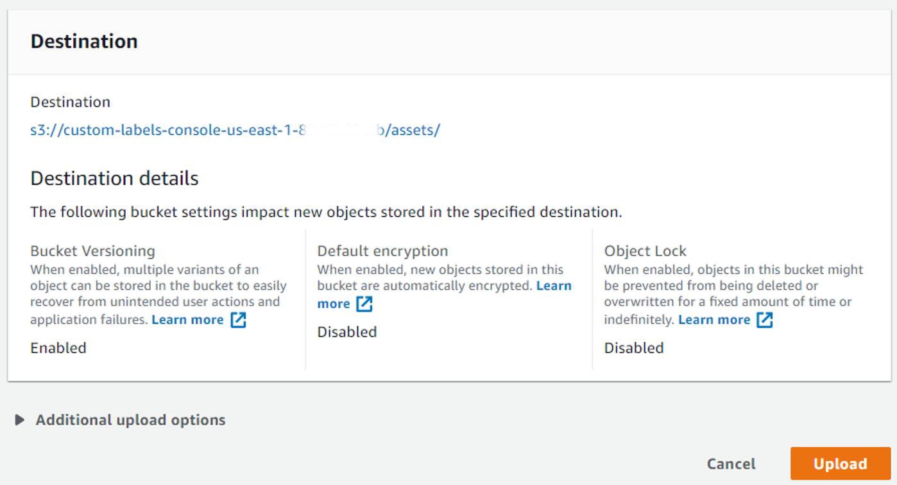
After the upload, the S3 folder structure should look like this and the /train subfolder should contain 70 images:
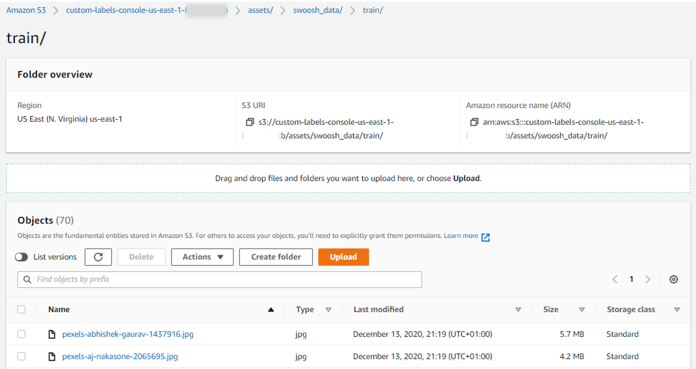
Step 3: Create a Rekognition Custom Labels dataset
Now, we will create a Rekognition Custom Labels dataset. A Rekognition Custom Labels dataset references the training/test dataset residing in S3 and allows you to add labels/bounding box metadata to your images. The labeling process will generate a manifest file that includes (1) the respective labels/bounding box information and (2) the references to the images stored in S3. Without a manifest file we won’t be able to start a Rekognition Custom Labels training job.
You can only create Rekognition Custom Labels datasets by using the Amazon Rekognition Custom Labels console. However, instead of creating the image labels/bounding boxes from scratch which is a kind of cumbersome manual process, you can also create a Custom Labels dataset based on an existing manifest file that already includes the respective label/bounding box information of your dataset.
And you’re lucky: We already created the manifest file with the necessary information for you. This will save you approximately 30-40 minutes and you won’t need to draw bounding boxes yourself.
Step 3.1: Edit and upload the manifest file
On your machine:
-
Download and open the manifest file you can get from GitHub here.
-
Replace the beginning of ALL 70
s3://[YOUR_CUSTOM_LABELS_DEFAULT_BUCKET]/...resource identifiers with the correct name of your S3 Rekognition Custom Labels default bucket. You can get the bucket name by printingcustom_labels_bucketto the R console. Save and close the manifest file.
Navigate to the S3 console. Upload the updated manifest file to the root folder of your Rekognition Custom Labels default bucket:
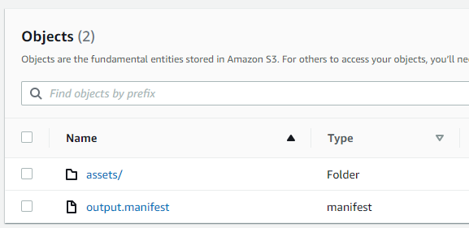
Step 3.2: Create Custom Labels dataset based on uploaded manifest file
Navigate to the Rekognition Custom Labels console. Click on Datasets in the left sidebar and then on Create dataset. Specify the following:
-
Dataset name: swoosh_dataset
-
Image location: Select Import images labeled by Amazon SageMaker Ground Truth
-
.manifest file location: The S3 path to the manifest file we uploaded in the previous step
After that, click on Submit at the bottom of the page:
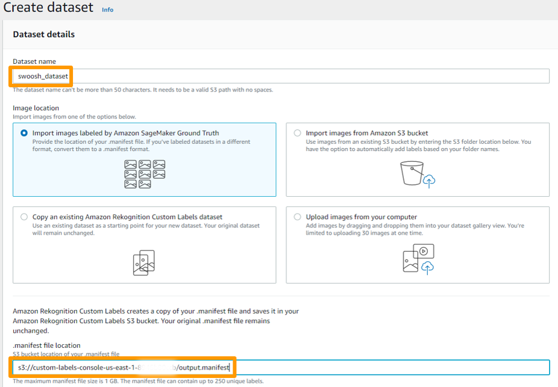
Step 3.3: Check image labels and new manifest file
In the Rekognition Custom Labels console you should find the generated Swoosh_dataset underneath Datasets. All 70 images of the dataset should include the respective label/bounding box information:
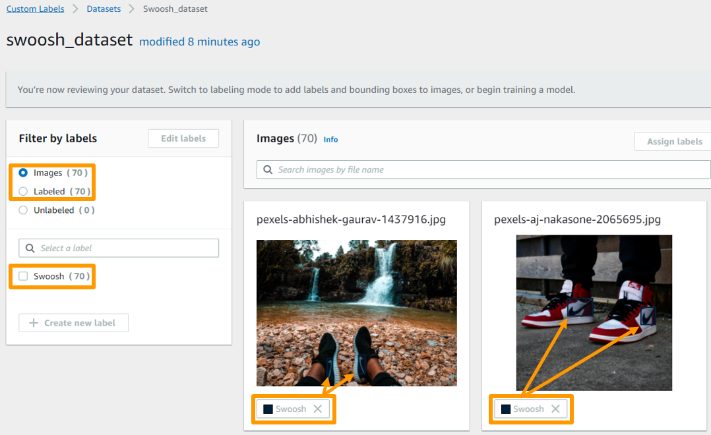
Important: Using an existing manifest file to create a Custom Labels dataset will also create a NEW manifest file output.manifest in your Custom Labels S3 default bucket underneath [YOUR_CUSTOM_LABELS_DEFAULT_BUCKET]/datasets/swoosh_dataset/manifests/output. This new manifest file will be the one that we’ll pass as a parameter when starting the training job later:
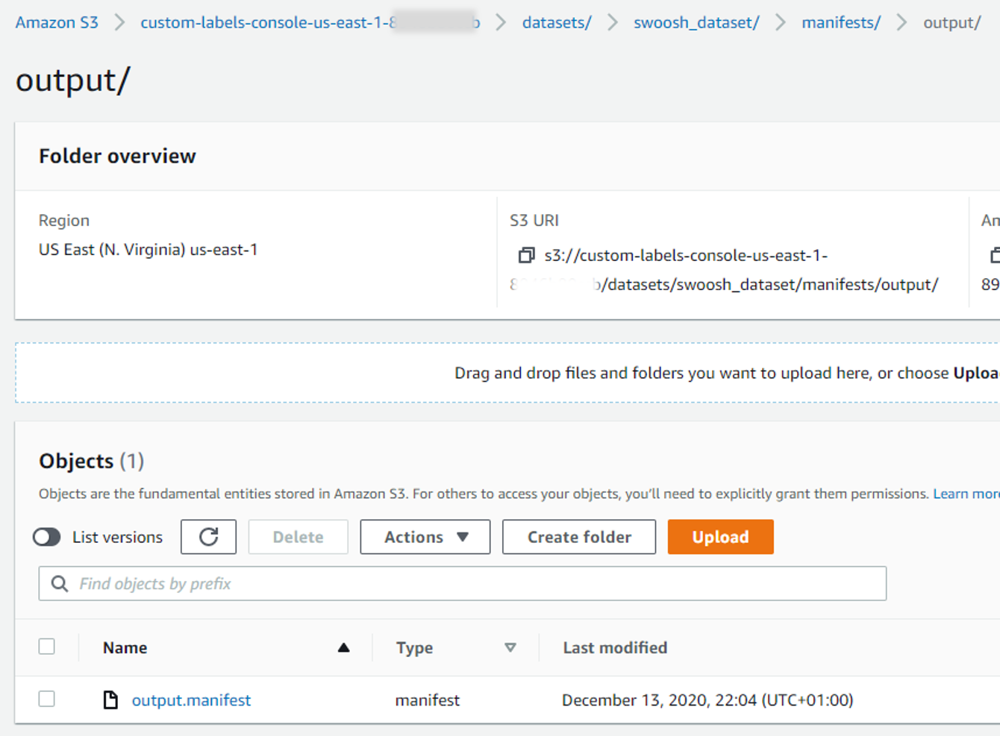
Step 4: Create your project
Rekognition Custom Labels projects help you to manage the life cycle of your machine learning models. A trained model always belongs to one project. A project just serves as an umbrella under which you train, deploy and manage one or more image classification/object detection models.
We will initialize a Rekognition client and create our first Custom Labels project via the API:
rek <- rekognition()
project_name <- "swoosh_detector"
project_arn <- rek$create_project(project_name)
create_project() returns the project’s Amazon Resource Name (ARN). We will store it in a separate variable which we will need later when defining the training job for our Swoosh detection model.
Alternatively, you can also use the following code snipped to retrieve the entire list of your Rekognition Custom Labels projects and select the project ARN of your choice:
rek$describe_projects() %>%
pluck("ProjectDescriptions") %>%
map_chr("ProjectArn")
Step 5: Train your model
You train a model by calling create_project_version() which is not the most intuitive function name in this context. As you will see below, we don’t need to choose nor specify the training algorithm itself. Based on the provided labeled data Amazon Rekognition Custom Labels automatically selects the right machine learning algorithm, trains a model (in our case an object detection model), and provides model performance metrics at the end of the training.
To train a model, the following information is needed:
-
Name: A unique name for the model. Best practice is to use a project name - timestamp combination for the model name.
-
Project ARN: The Amazon Resource Name (ARN) of the project that will manage the model lifecycle and which we stored in
project_arn. -
Training dataset: A manifest file with the S3 location of the training image dataset and the image labeling information. This is the manifest file that was generated in
datasets/swoosh_dataset/manifests/output/output.manifestwhen we created the Rekognition Custom Labels dataset in the step 3 above. -
Test dataset (optional): A manifest file of the test set generated like the training set manifest file via the Rekognition Custom Labels console. If not provided, Rekognition Custom Labels creates a test dataset with a random 80/20 split of the training dataset which is the option we will use here by setting
AutoCreate = TRUEbelow. -
Training results location – The Amazon S3 location where the training results are stored. We will store the results of training jobs in dedicated subfolders
/output_folder/[project name]/[model name]in our S3 Rekognition Custom Labels default bucket.
Info
Before you start the training job by executing the code chunk below, make sure to get a coffee. The training time for the Swoosh Detector model will be approximately one hour.
model_name <- paste0(project_name, ".", format(Sys.time(), "%Y-%m-%dT%H.%M.%S"))
manifest_location <- "datasets/swoosh_dataset/manifests/output/output.manifest"
output_folder <- paste0("output_folder/", project_name, "/", model_name)
model_arn <- rek$create_project_version(ProjectArn = project_arn,
VersionName = model_name,
OutputConfig = list(
S3Bucket = custom_labels_bucket,
S3KeyPrefix = output_folder
),
TrainingData = list(
Assets = list(
list(
GroundTruthManifest = list(
S3Object = list(
Bucket = custom_labels_bucket,
Name = manifest_location
)
)
)
)
),
TestingData = list(
AutoCreate = TRUE
)
)
The response from create_project_version() is the ARN of the trained Swoosh detector model. You will use the model ARN in subsequent API requests when deploying the trained model, making real-time predictions, and stopping the running model.
Use the following command to get the current status of the training job. Training is complete when the status is TRAINING_COMPLETED.
training_results <- rek$describe_project_versions(ProjectArn = project_arn,
VersionNames = list(
model_name
)
)
training_status <- training_results %>%
pluck("ProjectVersionDescriptions", 1, "Status")
training_status
## [1] "TRAINING_COMPLETED"
Step 6: Evaluate the training results
Once the training job completed successfully, we can evaluate the model performance metrics on the test set. Amazon Rekognition Custom Labels provides various model performance metrics for object detection models: (1) Metrics for the test set as a whole and (2) metrics for each predicted bounding box in your test set.
Via the API we can quickly have a look at the F1 score:
eval_results <- training_results$ProjectVersionDescriptions[[1]] %>%
pluck ("EvaluationResult")
eval_results
## $F1Score
## [1] 0.6461539
##
## $Summary
## $Summary$S3Object
## $Summary$S3Object$Bucket
## [1] "custom-labels-console-us-east-1-8946b80ccb"
##
## $Summary$S3Object$Name
## [1] "output_folder/swoosh_detector/swoosh_detector.2020-12-13T22.50.45/EvaluationResultSummary-swoosh_detector-swoosh_detector.2020-12-13T22.50.45.json"
##
## $Summary$S3Object$Version
## character(0)
The F1 score is 0.646 for our Swoosh detector model. All other model performance metrics are accessible via the Console or via downloading the evaluation results summary file which we will do below:
eval_summary <- s3$get_object(Bucket = custom_labels_bucket,
Key = eval_results$Summary$S3Object$Name,
ResponseContentType = "json") %>%
.$Body %>%
rawToChar() %>%
fromJSON()
Now, let us have a look at the other metrics:
eval_summary$EvaluationDetails$NumberOfTrainingImages
## [1] 56
eval_summary$EvaluationDetails$NumberOfTestingImages
## [1] 14
We see that 56 images went into the training set and 14 images into the test set. This matches the 80/20 split of our data set of 70 images when we set AutoCreate = TRUE during the training job specification.
The parsed evaluation summary results also include various model performance metrics besides just the F1 score:
eval_summary %>%
pluck("LabelEvaluationResults", "Metrics") %>%
mutate(
AverageRecall = eval_summary$AggregatedEvaluationResults$AverageRecall,
AveragePrecision = eval_summary$AggregatedEvaluationResults$AveragePrecision
) %>%
relocate(AverageRecall, AveragePrecision, Recall, Precision, F1Score, Threshold) %>%
pivot_longer(cols = everything())
## # A tibble: 6 x 2
## name value
## <chr> <dbl>
## 1 AverageRecall 0.941
## 2 AveragePrecision 0.609
## 3 Recall 0.7
## 4 Precision 0.6
## 5 F1Score 0.646
## 6 Threshold 0.258
According to the official documentation all model performance metrics are calculated in the manner you would expect. The Threshold above is the value with which a prediction is counted as a true or false positive and is set based on the test set.
Each image of the test set has one or more ground truth bounding boxes. The Swoosh object detector, as an object detection model, predicts bounding boxes in an image. Each predicted bounding box is associated with a confidence score. There are three types of bounding box predictions:
-
True Positives (TP): The object is there and the model detects it with a bounding box associated with a confidence score above the threshold.
-
False Negatives (FN): The object is there and the model does not detect it OR the object is there and the model detects it with a bounding associated with a confidence score below the threshold
-
False Positives (FP): The object is not there but the model detects one.
We will have a look at the individual bounding box predictions in each image of the test set. For this, we will download and parse yet another JSON file that includes the details for each predicted bounding box:
test_set_results_file <- training_results$ProjectVersionDescriptions[[1]] %>%
pluck("TestingDataResult", "Output", "Assets", 1, "GroundTruthManifest", "S3Object", "Name")
test_set_results <- s3$get_object(Bucket = custom_labels_bucket,
Key = test_set_results_file,
ResponseContentType = "json") %>%
.$Body %>%
rawToChar() %>%
# The next three lines transform the ndjson formatted response into json
stringi::stri_replace_last_fixed(., "\n", "") %>%
gsub('\n', ',', ., fixed=TRUE) %>%
paste0('[', ., ']') %>%
fromJSON()
image_ids <- test_set_results$`rekognition-custom-labels-object-id`
file_names <- sub(".*[/@]", "", test_set_results$`source-ref`)
object_list <- test_set_results$`rekognition-custom-labels-evaluation-metadata`$objects
l <- list(.x = image_ids, .y = object_list, .z = file_names)
eval_test_set_df <- pmap_dfr(l, function(.x, .y, .z) {
df <- .y$`rekognition-custom-labels-evaluation-details` %>%
select(starts_with("is-")) %>%
mutate(
file_name = .z,
image_id = .x,
box_id = seq.int(0, nrow(.y)- 1)
) %>%
relocate(file_name, image_id, box_id)
df
})
eval_test_set_df$confidence_score <- map(test_set_results$`rekognition-custom-labels-evaluation-metadata`$objects,
"confidence") %>% flatten_dbl()
The parsed response below shows us the test set results per predicted bounding box (box_id) grouped by image (image_id):
select(eval_test_set_df, -file_name, -`is-true-negative`) %>%
head()
## image_id box_id is-true-positive is-false-positive is-false-negative
## 1 1 0 TRUE FALSE FALSE
## 2 2 0 FALSE FALSE TRUE
## 3 2 1 FALSE TRUE FALSE
## 4 3 0 TRUE FALSE FALSE
## 5 3 1 TRUE FALSE FALSE
## 6 4 0 TRUE FALSE FALSE
## is-present-in-ground-truth confidence_score
## 1 TRUE 0.96415
## 2 TRUE 0.00914
## 3 FALSE 0.29019
## 4 TRUE 0.32331
## 5 TRUE 0.31989
## 6 TRUE 0.88223
The image and bounding box identifiers match the ones you will find when evaluating the individual image prediction results via the Rekognition Custom Labels Console. We will use the fifth image of our test set to illustrate this fact:
eval_test_set_df %>%
filter(image_id == 5) %>%
select(-`is-true-negative`, -`is-false-positive`)
## file_name image_id box_id is-true-positive
## 1 pexels-kaique-rocha-48262.jpg 5 0 TRUE
## 2 pexels-kaique-rocha-48262.jpg 5 1 FALSE
## is-false-negative is-present-in-ground-truth confidence_score
## 1 FALSE TRUE 0.97086
## 2 TRUE TRUE 0.01341
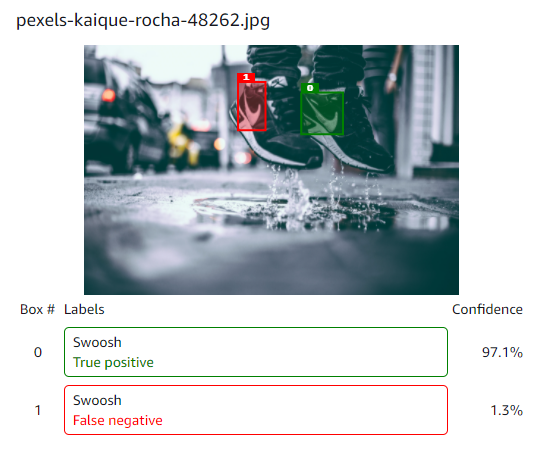
We can now start analyzing the test set results in more detail:
test_set_summary <- eval_test_set_df %>%
select(starts_with("is-"), -`is-true-negative`) %>%
summarise(across(where(is.logical), sum))
test_set_summary
## is-true-positive is-false-positive is-false-negative is-present-in-ground-truth
## 1 13 7 4 17
As you can see, we have 17 ground truth bounding boxes in the 14 images of our test set. The Swoosh detector model detected 13 (True Positives) labels correctly and missed to detect 4 (False Negatives). In total, the model falsely detected 7 (False Positives) Swooshes which were not part of the images.
Let us check out the False Positives a bit more:
eval_test_set_df %>%
filter(`is-false-positive` == TRUE) %>%
select(-file_name, -`is-true-positive`, -`is-true-negative`, -`is-false-negative`)
## image_id box_id is-false-positive is-present-in-ground-truth confidence_score
## 1 2 1 TRUE FALSE 0.29019
## 2 6 0 TRUE FALSE 0.28191
## 3 6 1 TRUE FALSE 0.56933
## 4 6 3 TRUE FALSE 0.60150
## 5 8 1 TRUE FALSE 0.42785
## 6 12 1 TRUE FALSE 0.39023
## 7 14 1 TRUE FALSE 0.83339
We see that 3 of the 7 False Positives were caused just by a single image in our test set.
Based on the individual bounding box predictions, we are even able to calculate the model performance metrics ourselves:
recall <- test_set_summary$`is-true-positive` / (test_set_summary$`is-true-positive` + test_set_summary$`is-false-negative`)
precision <- test_set_summary$`is-true-positive` / (test_set_summary$`is-false-positive` + test_set_summary$`is-true-positive`)
f1_score <- (recall * precision / (recall + precision)) * 2
tibble(recall, precision, f1_score)
## # A tibble: 1 x 3
## recall precision f1_score
## <dbl> <dbl> <dbl>
## 1 0.765 0.65 0.703
Interestingly, the model performance metrics we just calculated based on the individual bounding box predictions DO NOT match the model performance metrics calculated by Rekognition Custom Labels which we extracted from the evaluation results summary file at the beginning of this section. By comparison, the model performance metrics calculated by Rekognition Custom Labels seem to underestimate the true model performance.
Step 7: Deploy your model
It is time to deploy our Swoosh detection model to check its performance against the hold-out test set. You start the deployment by calling start_project_version() on the Rekognition object. We will go with the minimum number of inference units. The number of inference units decide the maximum number of transactions per second (TPS) a model endpoint can support for real-time predictions.
rek$start_project_version(ProjectVersionArn = model_arn,
MinInferenceUnits = 1)
Use the following command to get the current deployment status. Model deployment is complete when the status is RUNNING.
rek$describe_project_versions(project_arn, model_name) %>%
pluck("ProjectVersionDescriptions", 1, "Status")
## [1] "RUNNING"
Step 8: Make real-time predictions for new data
We will use the 5 images of the hold-out test set to test the deployed Swoosh detector model. Make sure to store the hold-out test set images underneath ./images/inference on your end. We will test each of the following images one by one:
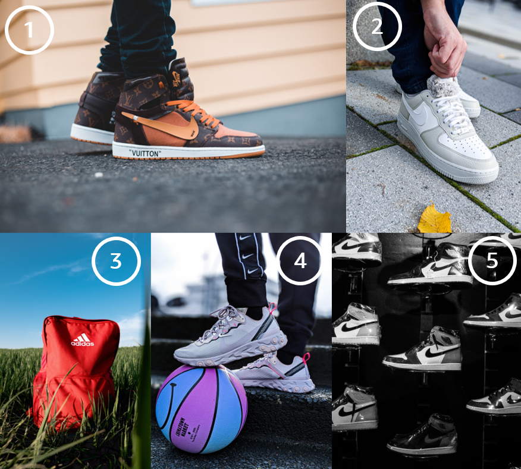
As you can see, images 1 and 2 contain a single Swoosh each, image 3 contains no Swoosh, and images 5 and 6 include multiple Swooshes.
We will show you various best practices on how to parse the results from the Rekognition Custom Labels API and how to add the received bounding box coordinates to the original image using the magick package.
file_names <- list.files("./images/inference/")
path_to_file <- "./images/inference/"
Info
Your prediction results might differ slightly from the results below because the Swoosh object detection model was trained based on a radom split of the training data set.
Image 1: A single Swoosh
We will read the first image into a raw vector and then send it to the model endpoint for prediction. Afterwards, we will parse the result into a tibble that will include one row per detected label with the respective label name and the confidence score.
Unlike described in the official Rekognition Custom Labels documentation, it is NOT necessary to pass the image as base64-encoded image bytes to detect_custom_labels().
file <- paste0(path_to_file, file_names[1])
image <- read_file_raw(file)
resp <- rek$detect_custom_labels(ProjectVersionArn = model_arn,
Image = list(
Bytes = image
)
)
# Parse the result
names <- resp$CustomLabels %>%
map_chr("Name")
confidence <- resp$CustomLabels %>%
map_dbl("Confidence")
tibble(names, confidence)
## # A tibble: 1 x 2
## names confidence
## <chr> <dbl>
## 1 Swoosh 84.5
In total, the model detected one Swoosh in the image with a high confidence.
Let us extract the bounding box coordinates from the response and add the bounding box to the original picture.
# Convert raw image into a magick object
magick_image <- image_read(file)
image_attr <- image_info(magick_image)
# Extract bounding box information of the detected object from the response
bounding_box <- resp$CustomLabels[[1]]$Geometry$BoundingBox
# Calculate bounding box properties
width <- bounding_box$Width * image_attr$width
height <- bounding_box$Height * image_attr$height
left <- bounding_box$Left * image_attr$width
top <- bounding_box$Top * image_attr$height
# Add bounding box to image
image <- image_draw(magick_image)
rect(left, top, left + width, top + height, border = "red", lty = "dashed", lwd = 15)
dev.off()
image <- image %>%
image_scale(500)
print(image)
## # A tibble: 1 x 7
## format width height colorspace matte filesize density
## <chr> <int> <int> <chr> <lgl> <int> <chr>
## 1 JPEG 500 333 sRGB TRUE 0 72x72
Great! We see that our model detected the Swoosh in the image correctly. Let’s continue!
Image 2: Another single Swoosh
file <- paste0(path_to_file, file_names[2])
image <- read_file_raw(file)
resp <- rek$detect_custom_labels(ProjectVersionArn = model_arn,
Image = list(
Bytes = image
)
)
# Parse the result
names <- resp$CustomLabels %>%
map_chr("Name")
confidence <- resp$CustomLabels %>%
map_dbl("Confidence")
tibble(names, confidence)
## # A tibble: 1 x 2
## names confidence
## <chr> <dbl>
## 1 Swoosh 62.8
In total, the model detected one Swoosh in the second image. Let us add the bounding box to the image.
# Convert raw image into a magick object
magick_image <- image_read(file)
image_attr <- image_info(magick_image)
# Extract bounding box information of the detected object from the response
bounding_box <- resp$CustomLabels[[1]]$Geometry$BoundingBox
# Calculate bounding box properties
width <- bounding_box$Width * image_attr$width
height <- bounding_box$Height * image_attr$height
left <- bounding_box$Left * image_attr$width
top <- bounding_box$Top * image_attr$height
# Add bounding box to image
image <- magick_image %>%
image_draw(res = 50)
rect(left, top, left + width, top + height, border = "red", lty = "dashed", lwd = 15)
dev.off()
image <- image %>%
image_scale(500)
print(image)
## # A tibble: 1 x 7
## format width height colorspace matte filesize density
## <chr> <int> <int> <chr> <lgl> <int> <chr>
## 1 JPEG 500 667 sRGB TRUE 0 72x72
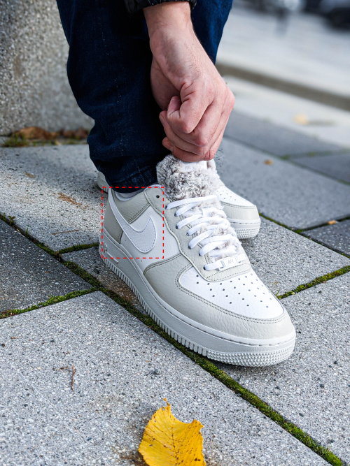
The model also detected this Swoosh correctly.
Image 3: No Swoosh
When Rekognition Custom Labels does not find a matching label in the image, it returns an empty response. The third image does not contain any Swoosh so the expected and parsed prediction result would be an empty tibble.
file <- paste0(path_to_file, file_names[3])
image <- read_file_raw(file)
resp <- rek$detect_custom_labels(ProjectVersionArn = model_arn,
Image = list(
Bytes = image
)
)
# Parse the result
names <- resp$CustomLabels %>%
map_chr("Name")
confidence <- resp$CustomLabels %>%
map_dbl("Confidence")
tibble(names, confidence)
## # A tibble: 0 x 2
## # ... with 2 variables: names <chr>, confidence <dbl>
The result shows that the model also got this prediction correctly.
Image 4: Multiple Swooshes
Our fourth image of the hold-out test set includes 4 Swooshes.
file <- paste0(path_to_file, file_names[4])
image <- read_file_raw(file)
resp <- rek$detect_custom_labels(ProjectVersionArn = model_arn,
Image = list(
Bytes = image
)
)
# Parse the result
names <- resp$CustomLabels %>%
map_chr("Name")
confidence <- resp$CustomLabels %>%
map_dbl("Confidence")
tibble(names, confidence)
## # A tibble: 4 x 2
## names confidence
## <chr> <dbl>
## 1 Swoosh 98.1
## 2 Swoosh 97.9
## 3 Swoosh 97.4
## 4 Swoosh 94.9
The parsed response shows that 4 Swooshes were detected in the image with a high confidence score. We will now add the correspondent bounding boxes to the original image.
Info
The
purrr-magickrecipe below allows you to extract the coordindates of ALL bounding boxes included in a Rekognition Custom Labels prediction response and add them to the original image. You can also use it for parsing results with a single label match.
# Convert raw image into a magick object
magick_image <- image_read(file)
image_attr <- image_info(magick_image)
# Extract bounding box information of detected objects from the response
bounding_boxes <- resp$CustomLabels
# Calculate bounding box properties
boxes <- map_dfr(bounding_boxes, function(x) {
bounding_box <- x[["Geometry"]][["BoundingBox"]]
width <- bounding_box$Width * image_attr$width
height <- bounding_box$Height * image_attr$height
left <- bounding_box$Left * image_attr$width
top <- bounding_box$Top * image_attr$height
cords <- c(width = width, height = height, left = left, top = top)
cords
})
# Add bounding boxes to image
image <- magick_image %>%
image_draw()
rect(boxes$left, boxes$top, boxes$left + boxes$width, boxes$top + boxes$height, border = "red", lty = "dashed", lwd = 15)
dev.off()
image <- image %>%
image_scale(500)
print(image)
## # A tibble: 1 x 7
## format width height colorspace matte filesize density
## <chr> <int> <int> <chr> <lgl> <int> <chr>
## 1 JPEG 500 667 sRGB TRUE 0 72x72
The model detected all Swooshes in the image correctly.
Image 5: Even more Swooshes
Our final image from the hold-out test set contains 9 Swooshes in total. Let us see if our model will be able to detect all of them.
file <- paste0(path_to_file, file_names[5])
image <- read_file_raw(file)
resp <- rek$detect_custom_labels(ProjectVersionArn = model_arn,
Image = list(
Bytes = image
)
)
# Parse the result
names <- resp$CustomLabels %>%
map_chr("Name")
confidence <- resp$CustomLabels %>%
map_dbl("Confidence")
tibble(names, confidence)
## # A tibble: 10 x 2
## names confidence
## <chr> <dbl>
## 1 Swoosh 99.9
## 2 Swoosh 99.4
## 3 Swoosh 99.4
## 4 Swoosh 97.3
## 5 Swoosh 90.3
## 6 Swoosh 89.6
## 7 Swoosh 85.0
## 8 Swoosh 82.1
## 9 Swoosh 71.2
## 10 Swoosh 69.2
Surprisingly, the model response shows 10 detected Swooshes. Let us add the bounding boxes.
# Convert raw image into a magick object
magick_image <- image_read(file)
image_attr <- image_info(magick_image)
# Extract bounding box information of detected objects from the response
bounding_boxes <- resp$CustomLabels
# Calculate bounding box properties
boxes <- map_dfr(bounding_boxes, function(x) {
bounding_box <- x[["Geometry"]][["BoundingBox"]]
width <- bounding_box$Width * image_attr$width
height <- bounding_box$Height * image_attr$height
left <- bounding_box$Left * image_attr$width
top <- bounding_box$Top * image_attr$height
cords <- c(width = width, height = height, left = left, top = top)
cords
})
# Add bounding boxes to image
image <- magick_image %>%
image_draw()
rect(boxes$left, boxes$top, boxes$left + boxes$width, boxes$top + boxes$height, border = "red", lty = "dashed", lwd = 15)
dev.off()
image <- image %>%
image_scale(500)
print(image)
## # A tibble: 1 x 7
## format width height colorspace matte filesize density
## <chr> <int> <int> <chr> <lgl> <int> <chr>
## 1 JPEG 500 625 sRGB TRUE 0 72x72
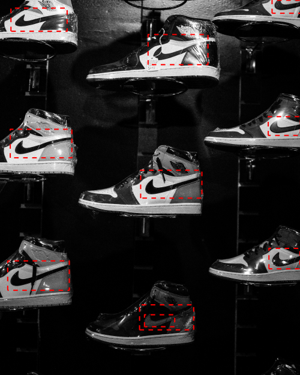
The visualized bounding boxes above in the image show the reason why the model detected 10 Swooshes in an image with only 9 Swooshes: One of the Swooshes was detected and counted twice by the model.
Step 9: Stop your model
After we used the hold-out test set for making real-time predictions, we will now stop our deployed model by calling stop_project_version():
rek$stop_project_version(model_arn)
The model stopped running when the returned status is STOPPED.
rek$describe_project_versions(project_arn, model_name) %>%
pluck("ProjectVersionDescriptions", 1, "Status")
## [1] "STOPPED"
You can always re-start a stopped model by calling start_project_version():
rek$start_project_version(ProjectVersionArn = model_arn,
MinInferenceUnits = 1 )
Summary
In this article we described how to build our own Swoosh detection model using Amazon Rekognition Custom Labels. What are our take home messages?
-
You can get started quickly building your own custom object detection and images classification models from scratch just by providing the labeled training data. You don’t need to have any Deep Learning expertise and you can use Amazon Rekognition Custom Labels to start exploring this particular Machine Learning domain.
-
Even small training data can produce very robust models that might already satisfy your production requirements. You can also use Rekognition Custom Labels models to build first baseline models.
-
Don’t disqualify trained models based on the model performance metrics too quickly. Especially, when the test set is relatively small. In our case, almost 50% of the False Positives in the test set were introduced by a single image. Besides mediocre model performance metrics, our Swoosh detection model had all 16 bounding box predictions in the 5 images of the hold-out test set correctly and had only one minor error when it counted a detected Swoosh twice.
-
You can easily integrate Amazon Rekognition Custom Labels models into your R and Shiny applications similar to other AWS AI Services which we describe here.